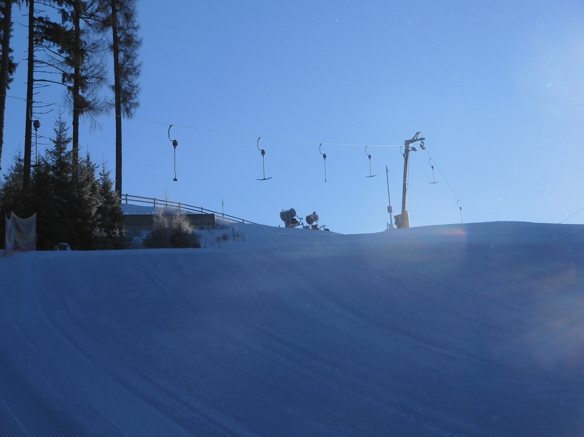
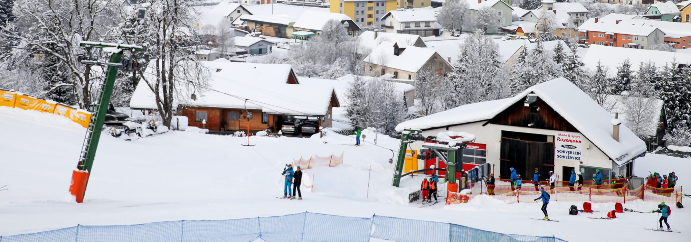
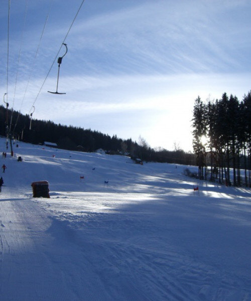
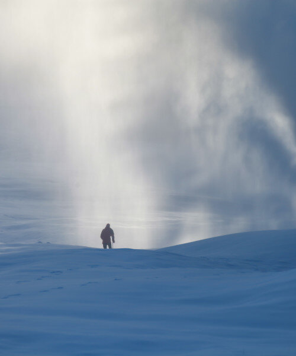
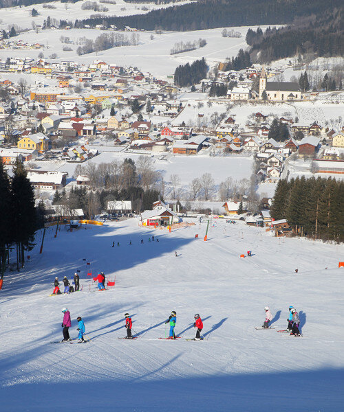

Turnau · Hochschwabgebiet · 800–1.250 m Seehöhe
Kleine Piste, große Chancen: Drei Schlepplifte und ein Tellerlift, täglich präparierte Pisten und ein modernes Beschneiungssystem – purer Fahrspaß in der schneesicheren Hochsteiermark.
Schwabenbergarena Turnau
Herzlich willkommen in der Schwabenbergarena Turnau in der Hochsteiermark (Österreich, Steiermark). Unsere Schlepplifte bringen dich bis auf 1.250 m Seehöhe. Zwei verschiedene Abfahrtsrouten garantieren sowohl für Könner als auch für Fahranfänger und kleine Pistenflitzer puren Fahrspaß – ganz ohne lange Wartezeiten.

Seehöhe 800–1.250 m, 3 Schlepplifte & 1 Tellerlift und 10 Pistenkilometer: 3 blaue, 6 rote und 1 schwarze Piste – inklusive homologierter FIS-Rennstrecken und Flutlicht für das Nachtskifahren.

Stundenkarten, Zeitwertkarten, Tages- und Mehrtagestickets, Familienkarten, Saisonkarten und das Gipfelstürmerticket – hier findest du alle aktuellen Preise.

Schneeschuhwandern auf sechs Routen, Langlaufen auf zwei Loipen mit 8,5 km Länge und ein Einkehrschwung ins zünftige Gamserl bei der Talstation.
Aktuelles
Wir starten in die neue Saison, sobald wir gute Pisten garantieren können.
Winterspaß garantiert

Dank eines modernen Beschneiungssystems, das laufend ausgebaut wird, ist der Winterspaß meistens von Anfang Dezember bis spät in den März möglich. Drei Schlepplifte, ein Tellerlift und täglich präparierte Pisten stehen allen Wintersportfreunden zur Verfügung.

Livebilder aus der Schwabenbergarena – informieren Sie sich über die aktuelle Wetter- und Schneelage.

Aktuelle Wetterdaten und Vorhersage für Turnau und die Schwabenbergarena.

Eindrücke aus der Schwabenbergarena – Pisten, Liftanlagen und Winterlandschaften rund um Turnau.